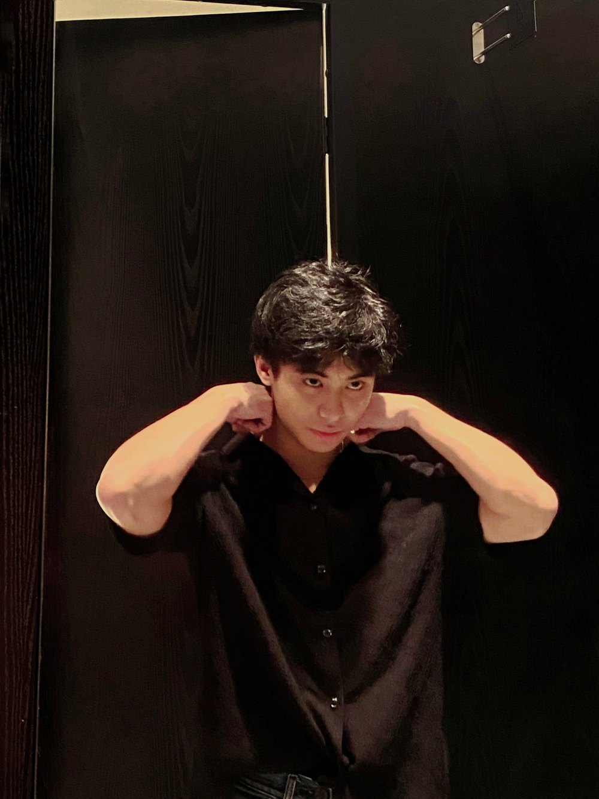
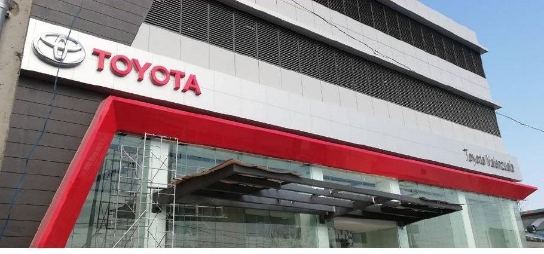
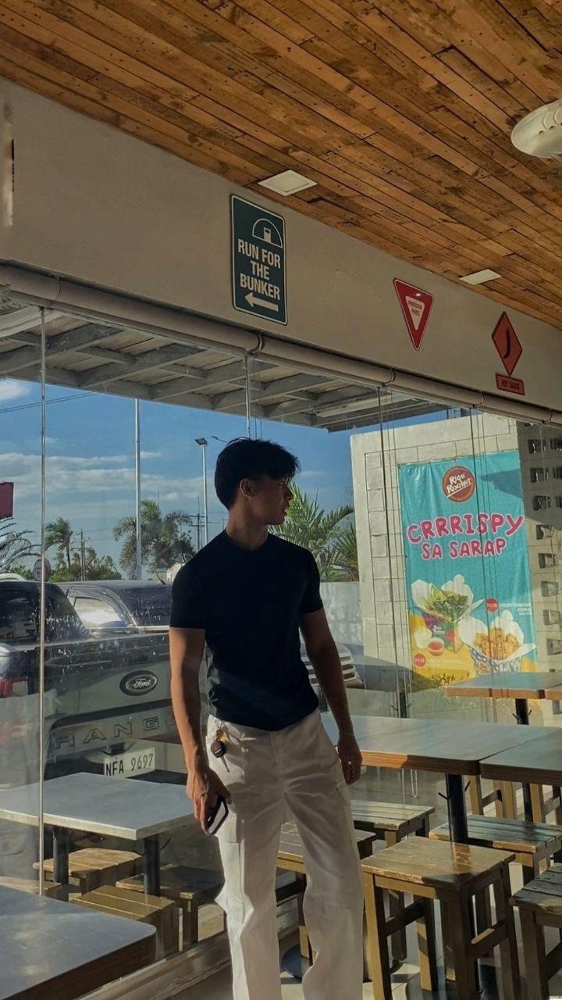
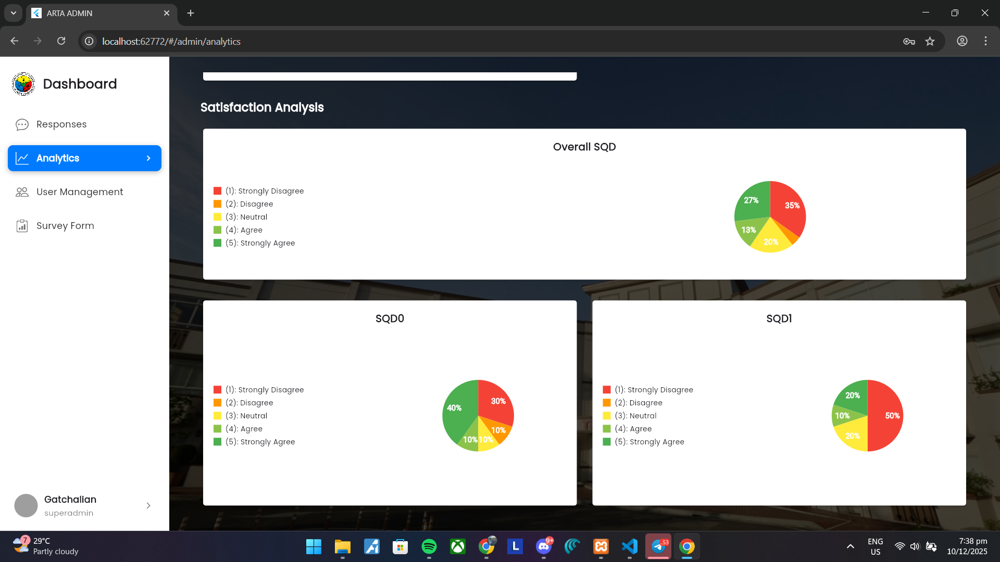
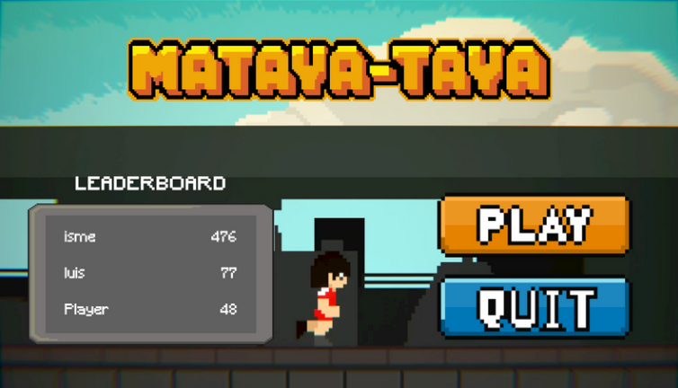
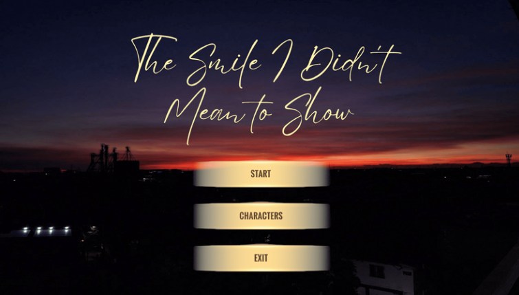
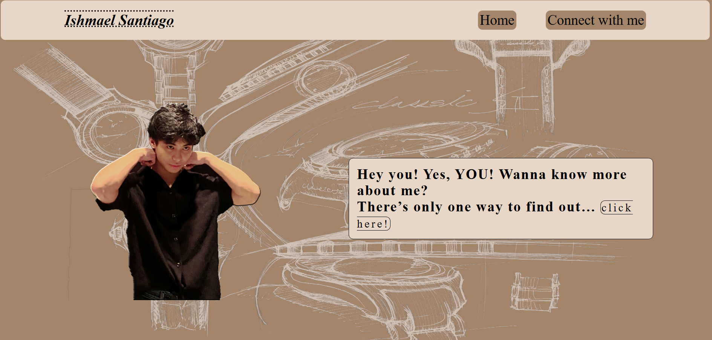

iDetect: OCR-based ID verification
A multi-portal web application that detects fraudulent Senior Citizen and PWD IDs for Valenzuela City Government. I led the technical work and interviewed stakeholders from the city's OSCA and PDAO offices.
BS IT student · Project Manager
I am an IT student who builds software and keeps business systems accurate. My OJT combined SAP record auditing with hands-on IT support and internal tool development.


I spent my 486-hour practicum inside one of Toyota's 3S dealerships (Sales, Service, Spare Parts) in Valenzuela City. Every day I worked with the same real systems the dealership runs on: SAP, structured audit trails, and the office network that keeps it moving.
Two departments, one internship: the IT Finance Department for record auditing, and the IT Department for hardware, networking, and internal tools.
Career objective: to grow as an IT professional in systems development, IT support, and project coordination, where documentation and accuracy matter as much as code.

I am a BSIT student at Pamantasan ng Lungsod ng Valenzuela. My coursework and projects cover web and mobile development, OCR-based verification, and game development, and my OJT showed me how enterprise systems run a real business.
I lead teams as a technical lead and project manager, and I follow one rule on every task: check the work against its source before calling it done.
My on-the-job training for the BSIT practicum, split between a finance team and the IT team.
Toyota Valenzuela Inc. is a 3S (Sales, Service, Spare Parts) Toyota dealership in Valenzuela City, opened in 2019. I handled records and IT tasks for the IT Finance Department and supported the IT Department as needed.
Select a photo to enlarge it. Company screens and ID cards are blurred for confidentiality.
Four moves, repeated on every record from August to my last day. The rule: nothing gets filed until it agrees with its supporting document.
My practicum log, from the first day to my last. Dot colors show the main focus of each week.
Printed labels, filed finance documents, optimized Windows performance, helped with IP address management, assisted in BRP auditing, and designed my first promotional brochures.
Designed brochures for car accessories, reviewed monthly credit and debit transactions for bank auditing, and began supporting an internal inventory application through documentation and data organization.
Completed the remaining features, updates, and final checks on a second inventory application. Attended the Toyota General Assembly on July 14, encoded BRP data in SAP, and audited petty cash forms.
Configured network settings, crimped cables, managed wires, counted PC hardware for inventory, helped relocate office PCs, and audited BRP and USP records.
Audited and filed OR, PR, and CR records, reviewed BRP documents for completeness, and checked CS# records and deposit slips.
Reviewed provisional receipts, monitored insurance referrals, audited petty cash forms, and kept up BRP audits.
Verified BRP details against supporting records, flagged information that needed another look, then classified and filed the records.
Processed, updated, and monitored service requests in SAP ticketing and tracked OR and PR transactions.
Located and scanned records for digital filing, rechecked bank transactions, and organized MIRO documents.
Compared recorded transactions with supporting documents, found incomplete records, and filed completed audits.
Verified transaction details, flagged what needed follow-up, and arranged audits by document type.
Continued the audit cycle: review, verify, note doubtful items, file.
Kept the routine going and filed audited documents so they stayed easy to retrieve.
Reviewed BRP records and filed audits by document and classification.
Compared records with supporting documents and flagged incomplete information.
Kept up the audit routine. On October 22, I joined the OJT visitation: a short interview with the HR representative and the OJT coordinator, plus a photo with my certificate.
Continued verifying transaction details and filing completed audits.
Wrapped up my BRP audits and completed my last day of OJT on November 5, 2026.
I helped build one inventory application through documentation, data organization, and system tasks, then finished a second one by completing its remaining features, updates, and final checks. This was my first look at a development cycle from requirements to a finished tool. (Details are generalized for confidentiality.)
I designed brochures for the company's car accessories to support its marketing activities.
I configured network settings on office devices and performed cable crimping and wire management for an organized, working setup.
I settled into one routine: read the details, match them against supporting records, mark anything doubtful, then organize and file. I kept it up through my final day on November 5, 2026.
Opens my portfolio demo reel on YouTube in a new tab.
An application is more than its code. It needs documentation, testing, and users who are ready to use it.
I used to see IT and finance as separate fields. Now I see how accurate records, clear audit trails, and well-made internal tools help a whole company decide and serve its customers.
Similar-looking document abbreviations slowed me down at first. I asked questions, compared documents side by side, and followed the department's filing system until I could tell them apart. Balancing finance and IT work taught me to handle urgent requests first and finish one task before opening the next.
Learn the systems early and ask when you are unsure. Compare every detail with its source before you save it, keep daily notes for your reports, and volunteer for IT work when your main tasks are done.
In my career I will check my work against its requirements, document what I build, and talk to the people who will actually use it.
Projects from my IT coursework. My role is stated on each one.
A multi-portal web application that detects fraudulent Senior Citizen and PWD IDs for Valenzuela City Government. I led the technical work and interviewed stakeholders from the city's OSCA and PDAO offices.

A web and mobile app that automates ARTA-compliant satisfaction surveys for Valenzuela City Government, with an admin dashboard that charts the survey responses.

A pixel-art endless runner inspired by the Filipino street game Taya-Taya. I managed planning and cross-platform development with Bagani Studios.
Play on itch.io
A narrative-driven story game. I managed the production pipeline and coordinated the team at Bagani Studios.
Play on itch.io
A restaurant website with menus, business information, and dining highlights, built as a two-person school project.

My own portfolio, designed and coded from scratch. The image shows the first version. This page is the redesign.
Verified Cisco Networking Academy badges, each linked to its Credly page.
Cisco Networking Academy
View badge on CredlyCisco Networking Academy
View badge on CredlyCisco Networking Academy
View badge on CredlyI am open to internships, collaborations, and project opportunities. Reach me through any channel below.
Email3ilcs252005@gmail.com Phone0926 551 0920 LinkedInishmael-santiago-b09516411 itch.iomaeluis.itch.io ResumeDownload (Word)